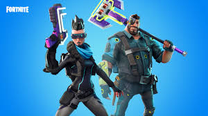

Fortnite
Fortnite is an online video game developed by Epic Games and released in 2017. It is available in three distinct game mode versions that otherwise share the same general gameplay and game engine: Fortnite: Save the World, a cooperative shooter-survival game for up to four players to fight off zombie-like  creatures and defend objects with fortifications they can build; Fortnite Battle Royale, a free-to-play battle royale game where up to 100 players fight to be the last person standing; and Fortnite Creative, where players are given complete freedom to create worlds and battle arenas. The first two-game modes were released in 2017 as early access titles and Creative was released on December 6, 2018. Save the World is available only for Windows, macOS, PlayStation 4, and Xbox One, while Battle Royale and Creative released for those platforms, in addition for Nintendo Switch, iOS and Android devices.
creatures and defend objects with fortifications they can build; Fortnite Battle Royale, a free-to-play battle royale game where up to 100 players fight to be the last person standing; and Fortnite Creative, where players are given complete freedom to create worlds and battle arenas. The first two-game modes were released in 2017 as early access titles and Creative was released on December 6, 2018. Save the World is available only for Windows, macOS, PlayStation 4, and Xbox One, while Battle Royale and Creative released for those platforms, in addition for Nintendo Switch, iOS and Android devices.
Gaming Modes
Currently, Fortnite is distributed as three different game modes, using the same engine and has similar graphics, art assets, and game mechanics.
Fortnite Battle Royale is a player-versus-player battle royale game for up to 100 players, allowing one to play alone, in a duo, or in a squad (usually consisting of three or four players). Weaponless players airdrop from a "Battle Bus" that crosses the game's map. When they land, they must scavenge for weapons, items, resources, and even vehicles while trying to stay alive and attack other players, eliminating them. Over the course of a round, the safe area of the map shrinks down in size due to an incoming toxic storm; players outside that threshold take damage and can be eliminated if they fail to quickly evacuate. This forces remaining players into tighter spaces and encourages player encounters. The last player, duo, or squad remaining is the winner.
Rest of the two modes, players can use their pickaxe to knock down existing structures on the map to collect basic resources that are wood, brick, and metal. Subsequently, in all modes, the player can use these materials to build fortifications, such as walls, floors, and stairs. Such fortification pieces can be edited to add things like windows or doors. The materials used have different durability properties and can be updated to stronger variants using more materials of the same type. Within Save the World this enables players to create defensive fortifications around an objective or trap-filled tunnels to lure husks through.
Awards
In 2017, the game was nominated for "Best Co-op Game" by PC Gamer, and for "Best Spectator Game" by IGN. In 2018, the game won the award for Best Ongoing Game by PC Gamer and IGN, the latter of which nominated it for "Best Nintendo Switch Game", "Best Mobile Game", and "Best Action Game".